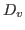
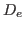
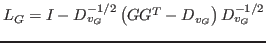
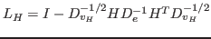
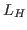
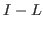
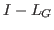
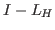

In this talk, we discuss our efforts in leveraging eigensolvers (developed to solve problems in computational science and engineering) in the spectral analysis of graph and hypergraphs for community detection. In community detection, the goal is to determine groupings of data objects given a set of relationships amongst multiple objects. These relationships are often represented by multiple edges in a graph in a simplified model, transforming the relationship of many objects into multiple pairwise relationships between objects. However, a multiway relationship between objects can be more naturally represented by an hyperedge, a generalization of an edge that contains one or more vertices. A focus of our work is understanding the differences between these graph and hypergraph models.
One method of detecting communities is through spectral analysis of the
graph or hypergraph. A common procedure is to form the graph or
hypergraph Laplacian, compute a few of its eigenpairs, and run kmeans on
the subspace spanned by those eigenvectors. Let the graph incidence
matrix be  , the hypergraph incidence matrix be
, the hypergraph incidence matrix be  , and the diagonal
matrices of vertex degrees and hyperedge cardinality be
, and the diagonal
matrices of vertex degrees and hyperedge cardinality be

and
respectively. Then the symmetric normalized graph Laplacian can be expressed as
, and the symmetric normalized hypergraph Laplacian is
. These operators may be expressed explicitly as a matrix or implicitly as a series of linear algebra operations. In practice, it may be unwise to explicitly build the matrix
; this is reflected both in our Matlab results and in the existing literature. When the edges of the graph corresponding toWe chose to implement these spectral clustering methods in the Trilinos framework, in order to solve these problems at a large scale (with an eventual target of hundreds of millions to billions of vertices). We leverage Trilinos's efficient parallel sparse eigensolver package Anasazi, which contains many popular eigensolvers such as Block Krylov Schur, LOBPCG, TraceMin, and the Riemannian Trust Region method. Anasazi supports MPI+X, where X includes OpenMP, CUDA, and Pthreads, and it has been used to solve data analytics problems with over a billion vertices. We will be presenting results obtained from our Trilinos-based code.
In recent work, we have been delving deeper into the eigensolver
framework, trying to better understand how to best use Anasazi in the
context of data science applications. One important issue is whether it
is more effective to compute the smallest eigenpairs of  or the
largest eigenpairs of
or the
largest eigenpairs of

. Although these problems have different eigenvalues, the eigenvectors are the same and thus both can be used in our spectral analysis. In general, it is easier to obtain the largest eigenvalues of a matrix than it is to obtain the smallest ones, since computing the smallest eigenpairs tends to require solving a series of linear systems. However,
may not be symmetric positive definite, which can pose challenges for eigensolvers;
has no such problem, as it is guaranteed to be symmetric positive definite, which may be advantagous to the hypergraph model. Another important issue that we will discuss is how many eigenpairs should be provided to k-means and how accurate they should be. The separation of the eigenvalues in the spectrum is one contributing factor to the running time of the eigensolver. Another factor is the tolerance requested from the eigensolver. In this talk, we will explore these questions in the context of Anasazi and the eigensolvers it provides, each of which have unique pros and cons.